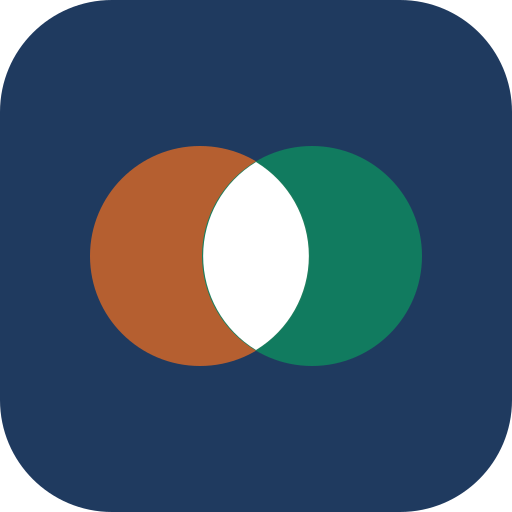

Ao criar, as duas IAs já analisam e devolvem a estrutura inicial do projeto.
As chaves ficam salvas só neste aparelho e vão direto para a Anthropic e a OpenAI.
Usa um repositório privado do seu GitHub para guardar os projetos. Faça isso uma vez em cada aparelho. Passo a passo no README.